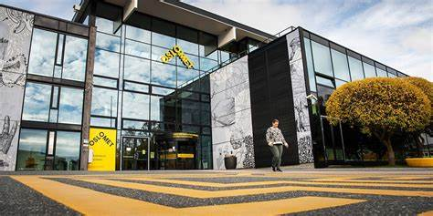

OSLOMET CAMPUS
WELCOME TO OSLOMET
Welcome to OsloMet, a public university in Norway that offers a wide range of academic programs and research activities in various fields of study, such as health, social sciences, education, technology, art, and design. OsloMet is a diverse, inclusive, modern, and innovative university that focuses on social responsibility and sustainable development. OsloMet is a university that contributes to a more sustainable welfare state and a better society for everyone. Join us and discover your potential at OsloMet!

Foto: Benjamin A. Ward
DID YOU KNOW?
- OsloMet is the fourth largest university in Norway, with over 20,000 students and 2,000 employees.
- OsloMet offers 59 bachelor’s programs, 44 master’s programs, and 8 PhD programs in various fields of study.
- OsloMet was established as a university in 2018, but its history dates back to 1813 when the first teacher training college in Norway was founded.
- OsloMet is a diverse and inclusive university, with students and staff from over 140 countries4. OsloMet also has a strong focus on social responsibility and sustainable development.
- OsloMet is a modern and innovative university, with state-of-the-art facilities and cutting-edge research. OsloMet is also a leading provider of online and blended learning in Norway.
Faculties
OsloMet is a public university that offers a wide range of academic programs and research activities. The university has four faculties, each with its own focus and expertise.
"T.K.D"
T.K.D. is the Faculty of Technology, Art and Design at OsloMet. T.K.D. offers higher education and research and development within technical subjects, arts and design. T.K.D. has five departments, two PhD programs, and several research labs.
"H.V"
H.V. is the Faculty of Health Sciences at OsloMet. H.V. educates health professionals and conducts research on health and welfare issues. H.V. has six departments, including nursing, physiotherapy, occupational therapy, social work, and public health.
"L.U.I"
L.U.I. is the Faculty of Education and International Studies at OsloMet. L.U.I. prepares teachers, educators, and international development experts. L.U.I. has four departments, education, childhood education, international studies, and lifelong learning.
"S.A.M"
S.A.M. is the Faculty of Social Sciences at OsloMet,that explores social phenomena and challenges through various disciplines and perspectives. S.A.M. has five departments, journalism, psychology, sociolog, administration, and economics.
Campuses
Oslomet is a state university that has two campuses in Norway: Pilestredet and Kjeller. Each campus has its own unique features and advantages, but they both share the same vision of providing high-quality education, research and collaboration opportunities for students and staff.
Campus Pilestredet
Pilestredet campus is located in the centre of Oslo, the capital city of Norway and a cultural hub that offers endless possibilities for entertainment, recreation and exploration. Pilestredet campus is surrounded by cafes, restaurants, shops, parks and the Oslo fjord. It is also well-connected by public transport, making it easy to get around the city and beyond.

Campus Kjeller
Kjeller campus is located in Kjeller, near the city of Lillestrøm, about 20 km northeast of Oslo. Kjeller campus is situated in a green and peaceful area, close to nature and scenery. It is also part of a research park that houses several national and international research institutes and companies, creating a stimulating and innovative environment for students and staff.
